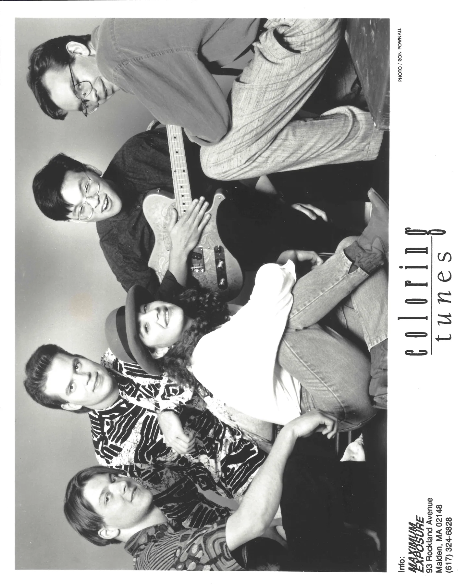

The music never left.
Before he became a Dallas-based pediatric oncologist and researcher, Andy Koh was a young musician writing songs, playing shows and imagining a life onstage.
His musical journey began at Harvard in the 1980s and continued through the band Coloring Tunes in the 1990s. The band recorded and performed, attracting industry interest. Andy ultimately pursued medicine, but his connection to songwriting endured.
The new record brings together that early ambition with the perspective of decades spent building a family, practicing medicine and working in research. The result is not an attempt to relive the past; it is the work of an artist who has lived long enough to hear his own songs differently.

The long way wasn't a detour. It became the story.
Writing songs and forming musical friendships during college.
Performing and recording with Coloring Tunes.
A career in pediatric oncology and research, with music always in the background.
Nine songs come together as Andy's debut solo album.